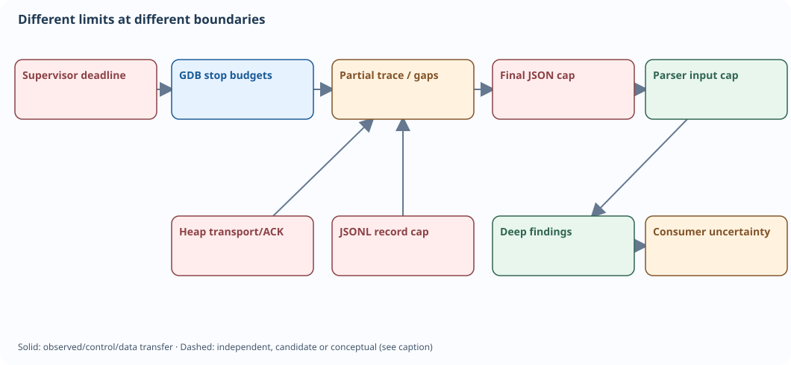

8 · Process and resource boundaries #
The caps at a glance #
| Limit | Controls | Does not control |
|---|---|---|
| Journal cap | Max size of the JSONL record stream written while tracing | The final JSON document |
| Export cap | Max size of one final JSON document written out | The already-built trace sitting in RAM |
| Parser input / page limits | What the parser accepts and returns (TP-7 rejects pages wider than 128 rather than truncating) | The engine's export setting; process RSS |
| Resource controls overall | Accidental runaway work | A hostile program (not a sandbox) |
The engine limits a collection session, the journal and the export independently. The parser has its own input/page limits and validation findings. None of this implies a hostile-code sandbox, and none bounds all assembled Rust objects.
Who enforces what #


| Layer | Enforces |
|---|---|
supervisor | A whole-session monotonic deadline (clock that never jumps backwards) and child-process cleanup |
resource_limits | Supported process restrictions; process-count limits use cgroups (a Linux feature for limiting process resources) only where available |
| GDB stop loop | Budgets for steps, instructions, commands, snapshots, variables and memory reads |
| Recorder / storage | Journal limits on JSONL records |
json_export | A separate per-document byte cap on the final JSON |
What happens on failure: a timeout or limit may retain a partial trace. An export failure is an operational error and is not a successful exported trace.
Two different completeness questions #
execution_status, stage_results, gaps and process/heap coverage each answer a different question:
- A stage can fail after some records were captured.
- A debugger can stop at a limit without proving the C program would never terminate.
- A heap event transport or ACK (acknowledgement message) failure shrinks the verified observed-PID history.
- Even a complete observed-PID history says nothing about a child that produced no event.
The parser reports these distinctions and does not fill them in.
Parser and consumer limits #
- The parser rejects oversized input independently of the engine's export setting.
- It does not reconstruct final trace state from JSONL.
- Validation can call a trace structurally sound but partial, or mark one relationship unavailable.
Concrete settings: engine limits and the parser API.